Nyzo version 571 (commit on GitHub) adds HTTPS capability to the WebListener.
This version affects all run modes when the WebListener is active.
With the exception of a single array in a new class, all of the changes in this version are in the WebListener class. At the top of the class, two constants were added for use in the preferences file. These preferences are for the path of the certificate keystore and the password to access the keystore.
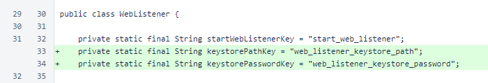Another constant was added for a temporaryForwardingWebDirectory. This directory is used on a temporary basis to allow validation with certbot from Let's Encrypt.
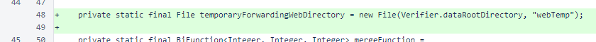The start() method was refactored. The logic handling the HTTP socket was encapsulated in the openHttpListener() method, and the openHttpsListener() method was added for the new HTTPS socket.
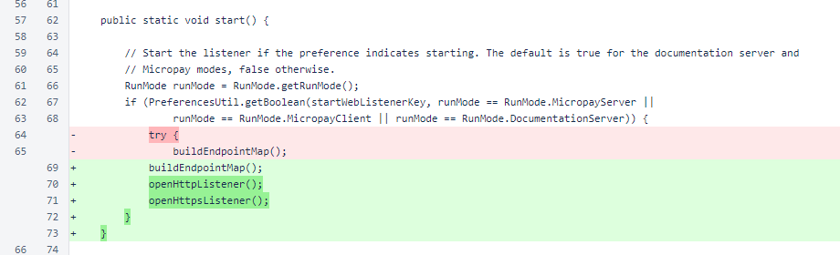The openHttpListener() method contains the same basic logic that was used for the HTTP socket in the previous version. One try/catch block wraps the creation of the ServerSocket and another wraps the acceptance and processing of each client Socket.
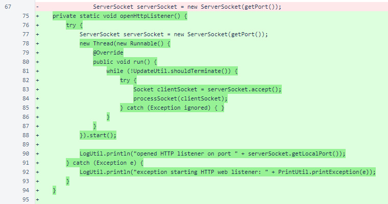The openHttpsListener() method follows the same pattern as the openHttpListener() method. A ServerSocket is opened, and connections are accepted and processed. The ServerSocket, in this case, is an SSLServerSocket, which provides the encryption for HTTPS.
Under default settings, the SSLServerSocket supports TLS 1.0, TLS 1.1, and several weak cipher suites. The protocol is restricted to TLS 1.2 only, and weak cipher suites are disabled.
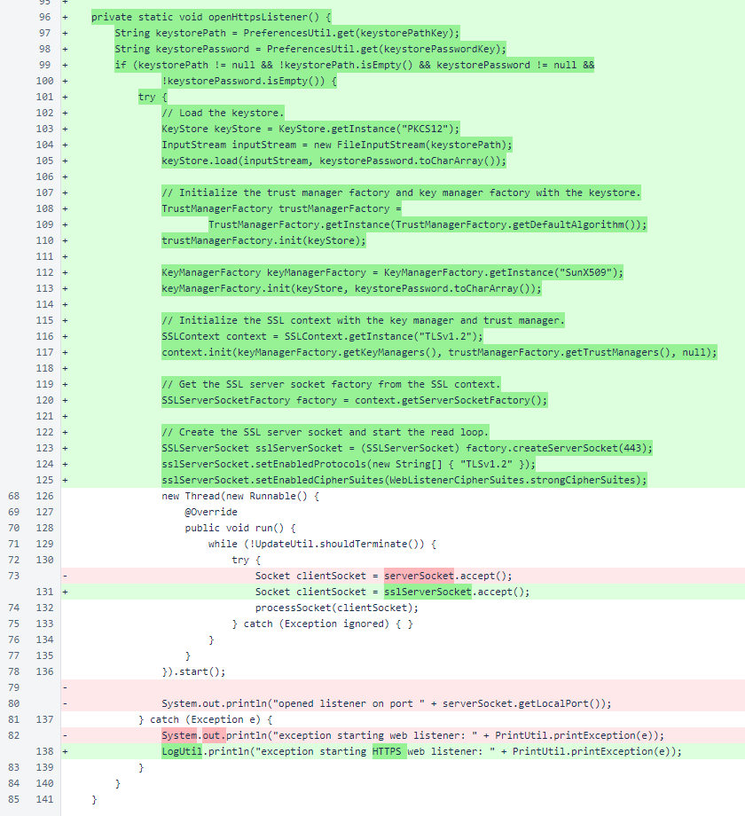In the thread of processSocket(), the read timeout was increased from 0.3 seconds to 2.0 seconds to allow extra time for encryption overhead. Also, the readMessageAndRespond() method is now called in a loop to allow sockets to be reused by a browser.
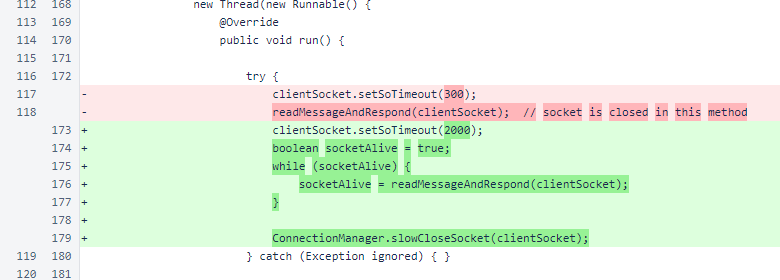In readMessageAndRespond(), a value is now returned to indicate whether a successful read and write occurred on the socket. The output stream is now left open, and the socket is no longer closed. Also, for added safety, all double dots are removed from the path to avoid attempts at escaping the web directory.
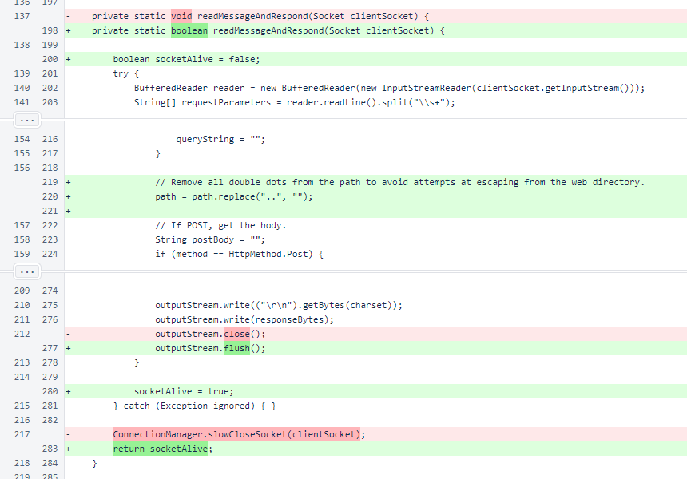In getResponse(), a condition was added to allow files to be served from a temporary web directory. This allows the Let's Encrypt certbot to be used without stopping the WebListener.
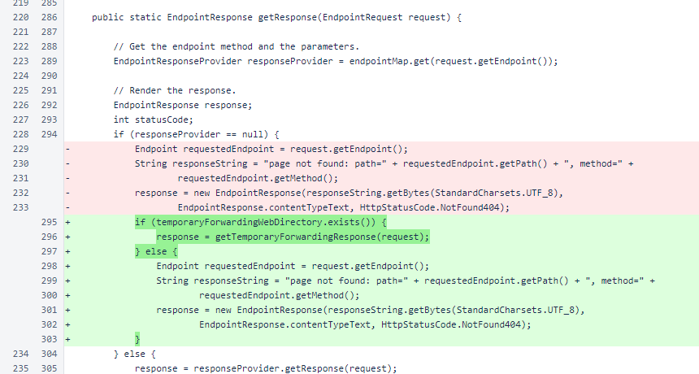The getTemporaryForwardingResponse() method serves text files from the temporaryForwardingWebDirectory.
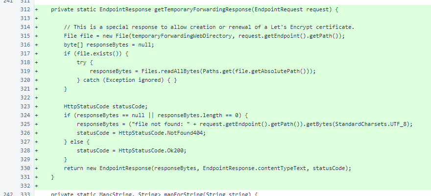The getPortHttps() method works like the getPort() method, providing the protocol's standard port as a default and allowing both global and run-mode-specific preference overrides.
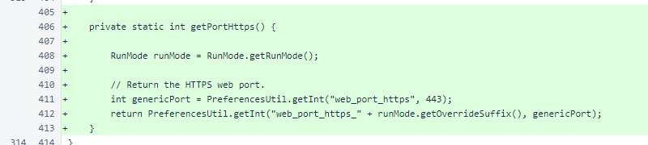The WebListenerCipherSuites class provides a single array with cipher suites that are not known to be weak. The list derivation process is described in the comment.
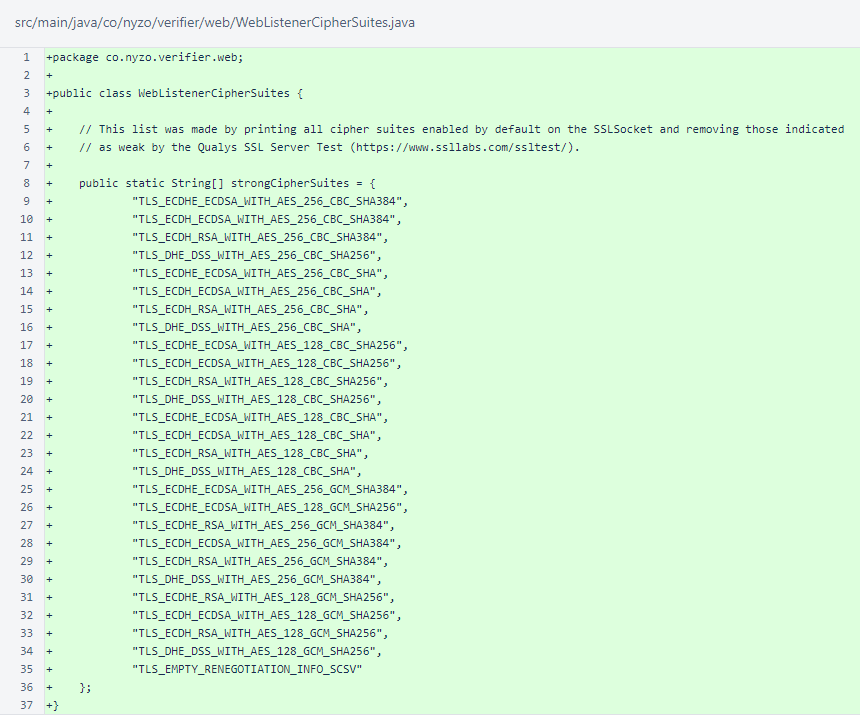This site provides step-by-step instructions for obtaining an SSL certificate and configuring the WebListener for HTTPS.